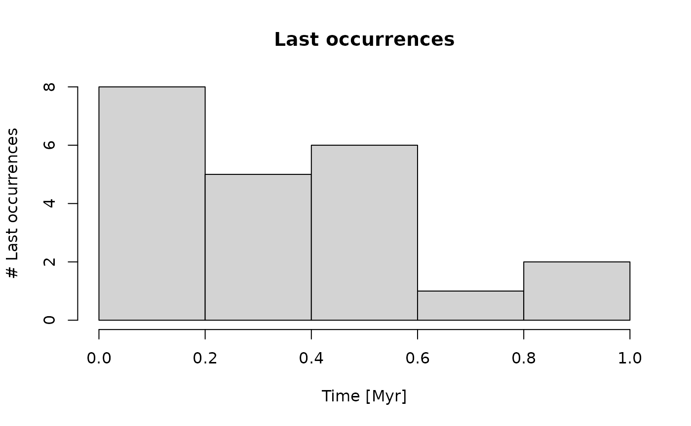
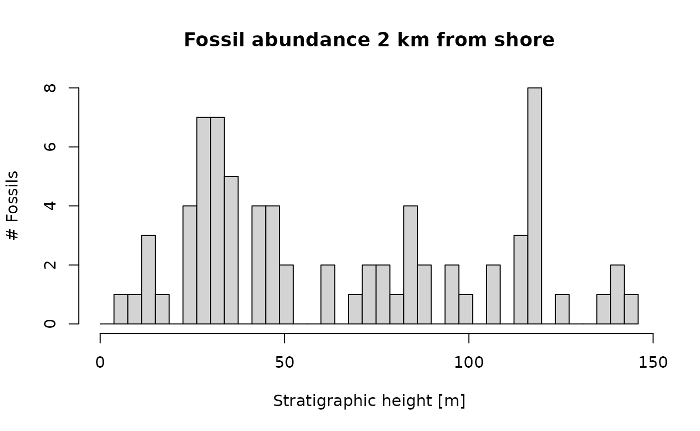

Introduction
This vignette provides an introduction to stratigraphic paleobiology applied to “event type data” such as location and age of specimens, and first/last occurrences of taxa.
First, let’s load the required packages:
Modeling fossil occurrences and first/last fossil occurrences
Location and age of fossil specimens and first/last occurrences of taxa can be considered distinct events that occur at specific points in time or stratigraphic positions. Up to a few notable exceptions, the same principles apply to this “event type data”, so we treat them together.
We model events as point processes. In the
StratPal package, we provide two functions to simulate
point processes:
p3, short for Poisson point process, to simulate events that occur at a constant ratep3_var_ratefor variable rate Poisson point processes to simulate events that occur at variable rates (e.g. extinction events)
The usage of p3 is straightforward:
# simulate fossil occurrences over one Myr with an average of 15 occurrences per Myr
p3(rate = 15, from = 0, to = 1) |>
hist(main = "Fossil abundance",
xlab = "Time [Myr]",
ylab = "# Specimens")
Note that due to to random fluctuations, the histogram can differ a lot from the constant rate that we simulated. This effect is more pronounced for low rates.
For p3_var_rate, you can pass either a function that
specifies the rate to x:
# return 100 occurrences by setting n parameter
# note that negative rates (where sin < 0) are ignored
p3_var_rate(x = sin, from = 0, to = 9, n = 100) |>
hist(xlab = "Time [Myr]",
ylab= "# Specimens",
main = "Fossil abundance")Alternatively, you can pass it two vectors x and
y. The rate is then determined by linear interpolation
between these vectors. This is equivalent to using the function
approxfun(x,y, rule = 2) as input for x.
# decline in last occurrences from 50 to 0 over 1 Myr
p3_var_rate(x = c(0,1), y = c(50, 0), from = 0, to = 1, f_max = 50) |>
hist(xlab = "Time [Myr]",
main = "Last occurrences",
ylab = "# Last occurrences")
Keep in mind that it is only a matter of interpretation whether the
“events” produced by p3 and p3_var_rate are
age/timing or locations of specimens from one taxon or of first/last
occurrences of multiple taxa. The conceptual framework holds for any
type of event type.
Task: Model an “extinction event” with a background rate of 3 species disappearing per Myr, and a peak in extinction rate where the rate is 10-fold increased over an interval of 200 kyr. How distinct is the peak in the histogram, and how much do the results differ due to randomness when you run the simulation multiple times?
Age-depth models
Throughout this examples, we use the age-depth models from 2 km and
12 km offshore in scenario A from Hohmann et
al. (2024). See ?scenarioA and
vignette("StratPal") for details on scenario A.
adm_2km = tp_to_adm(t = scenarioA$t_myr, # 2 km from shore
h = scenarioA$h_m[,"2km"],
T_unit = "Myr",
L_unit = "m")
adm_12km = tp_to_adm(t = scenarioA$t_myr, # 12 km from shore
h = scenarioA$h_m[,"12km"],
T_unit = "Myr",
L_unit = "m")
plot(adm_2km, # plot age-depth model 2 km from shore
lwd_acc = 2, # plot thicker lines for intervals with sediment accumulation (lwd = line width)
lty_destr = 0) # don't plot destructive intervals/gaps (lty = line type)
T_axis_lab() # add time axis label
L_axis_lab() # add length axis label
title("Age-depth model 2 km from shore")
plot(adm_12km, # plot age-depth model 12 km from shore
lwd_acc = 2,
lty_destr = 0)
T_axis_lab()
L_axis_lab()
title("Age-depth model 12 km from shore")
Task: Plot the sea level curve for scenario A, and
the water depth curves at the two locations. How is this connected to
the age-depth models, specifically to the presence and duration of gaps
and low/high sedimentation rates? You can use
plot_sed_rate_t, get_hiat_list and
get_hiat_duration from admtools.
Stratigraphic distortions of “event” type data
Any event type data can directly be transformed using an age-depth
model via time_to_strat. Depending on how the events are
interpreted, we need to choose different options.
Fossil specimens
Assuming the events are fossil specimens of one taxon, we can examine where specimens appear in the stratigraphic column:
p3(rate = 200, from = min_time(adm_2km), to = max_time(adm_2km)) |> # constant rate in time domain
time_to_strat(adm_2km, destructive = TRUE) |> # transform into depth domain
hist(xlab = "Stratigraphic height [m]", # plot
main = "Fossil abundance 2 km offshore",
ylab = "# Fossils",
breaks = seq(from = min_height(adm_2km), to = max_height(adm_2km), length.out = 20))
Note the option destructive = TRUE in
time_to_strat. This is because we assume specimens that
lived during a hiatus are destroyed.
Assuming the same rate of fossil specimens, we get a very different pattern 12 km from shore:
p3(rate = 200, from = min_time(adm_12km), to = max_time(adm_12km)) |> # same rate as 2 km from shore
time_to_strat(adm_12km, destructive = TRUE) |> # use different adm for transformation
hist(xlab = "Stratigraphic height [m]", # plot histogram
main = "Fossil abundance 12 km offshore",
ylab = "# Fossils",
breaks = seq(from = min_height(adm_12km), to = max_height(adm_12km), length.out = 20))
Not only is the section much shorter (not even 20 m), but there are 2 distinct peaks at the bottom of the section and around 13 m. Comparing with the age-depth model shows that these locations correspond to times of extreme stratigraphic condensation (low sedimentation rates, indicated by a near-horizontal age-depth model). As a result, more time is represented per stratigraphic increment, leading to fossil accumulations (Hohmann 2021).
Task: How does fossil abundance change along an onshore-offshore gradient when you assume the same rate of fossil occurrences in the time domain? Are there intervals where you can not recover spikes in fossil abundance, i.e. an increase in rate? How are these intervals linked to the external drivers of the platform architecture such as sea level and water depth?
First/Last occurrences of common taxa
In the fossil record, we can not directly observe origination and
extinction rates of taxa, but only their first and last occurrences.
This type of event data can directly be transformed using
time_to_strat when we assume taxa are very common. This
assumption will be explored further below.
p3(rate = 200, from = min_time(adm_2km), to = max_time(adm_2km)) |> # constant rate of last occ
time_to_strat(adm_2km, destructive = FALSE) |> # non-destructive transformation!
hist(xlab = "Stratigraphic height [m]", # plot histogram
main = "Last occurrences 2 km offshore",
ylab = "# Last occurrences",
breaks = seq(from = min_height(adm_2km), to = max_height(adm_2km), length.out = 20))This would be the pattern of last occurrences in the section 2 km
offshore when the rate of last occurrences is constant in the time
domain! The peaks coincide with the hiatuses, as the last occurrences of
the species that disappear during the hiatus cluster at the hiatus
surface (Holland and Patzkowsky 2015). Note
here that we used the option destructive = FALSE for
time_to_strat to make sure last occurrences that happen
during a hiatus appear at the hiatus surface. This is why the assumption
of abundant taxa is important: If taxa are rare, their last occurrence
does not match their actual time of extinction (Signor-Lipps effect, Signor and Lipps 1982), and their last
occurrences would be found below the hiatus surface. We explore the role
of abundance on the location of last occurrences further in the section
on range offset.
The patter 12 km offshore is very different:
p3(rate = 200, from = min_time(adm_12km), to = max_time(adm_12km)) |>
time_to_strat(adm_12km, destructive = FALSE) |>
hist(xlab = "Stratigraphic height [m]",
main = "Last occurrences 12 km offshore",
ylab = "# Last occurrences",
breaks = seq(from = min_height(adm_12km), to = max_height(adm_12km), length.out = 20))
It almost perfectly matches the pattern of fossil abundance. This is because the offshore section is much more dominated by condensation (which influences both fossil abundance and first/last occurrences equally), while the onshore section is dominated by hiatuses (which affect first/last occurrences). This shows that it is important to understand how “event” type data is affected by hiatuses: is it preserved, or is it destroyed?
Naturally, the same modeling pipeline is valid for first occurrences of common taxa.
The assumption of common taxa can be relaxed using the wrapper
last_occ, which provides the position and timing of the
last occurrence or a taxon as a function of taxon abundance, ecology,
taphonomy, and stratigraphy.
Task: How does the pattern of last occurrences change across an onshore-offshore gradient? If you observed a spike in last occurrences in one of the section, for what stratigraphic information do you need to look to exclude the possibility that the spike is a stratigraphic artifact?
Range offset
Here we explore the idea of range offset, which is the offset between the last occurrence of a taxon and its actual time of extinction (Holland and Patzkowsky 1999).
First, we model all occurrences of the taxon up to its extinction in the time domain, and save it in a variable:
t_ext = 1.5 # time of "true" extinction
r = 30 # rate of fossil occurrences
# simulate rate fossil occurrences of taxon
f_occ = p3(r, from = min_time(adm_2km), to = t_ext)
hist(f_occ,
xlab = "Time [Myr]",
ylab = "# Fossils",
main = "Fossil abundance",
breaks = seq(from = min_time(adm_2km), to = max_time(adm_2km), length.out = 20))
Then we can determine the stratigraphic position of the highest preserved fossil:
highest_occ = f_occ |> # take fossil occ. in time domain
time_to_strat(adm_2km, destructive = TRUE) |> # transform into stratigraphic domain, destroying fossils that coincide with hiatuses
max(na.rm = TRUE) # find highest preserved fossil (destroyed fossils are NA)Now we can determine two types of range offset, stratigraphic range offset and temporal range offset. Stratigraphic range offset distance (length dimension, SI units meter) between the position of the last preserved fossil and the stratigraphic position where the taxon actually goes extinct:
h_true_ext = t_ext |> # stratigraphic position of "true" extinction
time_to_strat(adm_2km, destructive = FALSE)
# distance between last occurrence of taxon and location where they actually go extinct
strat_range_offset_m = h_true_ext - highest_occIn this example, the stratigraphic range offset is 0.0895 meters.
The temporal range offset (time dimension, SI units seconds and derived units such as years) is the difference in time between the age of the last occurrence and the actual time of extinction:
t_last_occ = highest_occ |> # time when last preserved fossil lived
strat_to_time(adm_2km)
# time offset between true extinction and time when last fossil lived.
time_range_offset_myr = t_ext - t_last_occIn this example, the temporal range offset is 0.125 Myr years.
The wrapper range_offset allows to determine both
stratigraphic and temporal range offset as a function of ecology,
taphonomy, taxon abundance, and stratigraphy.
Task: How does the (temporal and stratigraphic) range offset change with the rate parameter? For which rate values are taxa abundant enough to make the Signor-Lipps effect negligible (i.e. the stratigraphic range offset is sufficiently small)? How do the results vary with (1) different times of “true” extinction within a fixed section and (2) across the onshore-offshore gradient?
Niche modeling
So far, we have only examined the effects of stratigraphic distortions (i.e., gaps and changes in sedimentation rates) on event type data. Here, we increase the complexity of the pipeline by incorporating niche modeling. For this, we need two components:
a niche definition that describes a taxons’ optimum value along an environmental gradient (cline), i.e. where is it the most abundant, and its tolerance along this gradient
information on how that gradient changes with time
In this example we focus on water depth as gradient. The general modeling framework works for any type of cline, see the “advanced functionality” vignette for details.
First, we define a function that determines how water depth (our gradient) changes with time:
t = scenarioA$t_myr # time steps of the model
wd = scenarioA$wd_m[,"2km"] # water depth 2 km offshore at model time steps
gc = approxfun(t, wd) # define function that defines how the gradient changes with time (gc = *G*radient *C*hange)
plot(t, gc(t),
type = "l",
xlab = "Time [Myr]",
ylab = "Water depth [m]",
main = "Water depth 2 km offshore")Next, we define the niche. This is done using a function that takes water depth (our gradient) as input, and returns numbers between 0 and 1. A 1 corresponds to the taxons’ environmental optimum, and a 0 reflects that it is completely outside of its niche. Values between 0 and 1 are are interpreted as observation or collection probabilities. If a specimen is present at a given time, the collection probability is the probability to observe it at the specified gradient.
For our example, we use the helper function snd_niche
(snd standing for “scaled normal distribution”) to define a
niche. The collection probability in this model follows the shape of a
bell curve with a peak at the environmental optimum, and a width
specified by the tol parameter. This is identical to the
probability of collection model by Holland and Patzkowsky (1999). See the “advanced
functionality” vignette for details how to construct other niche
definitions, ?bounded_niche for another template niche
mode, and ?discrete_niche for defining niches based on
discrete categories.
my_niche = snd_niche(opt = 10, # preferred water depth
tol = 5, # tolerance to water depth fluctuations
cutoff_val = 0) # cut off negative values - the taxon does not survive on land
x = seq(-2, 30, by = 0.1)
plot(x, my_niche(x),
type = "l",
xlab = "Water depth [m]",
ylab = "Collection probability",
main = "Collection probability of taxon")The taxon we are modeling has its environmental niche optimum in 10 m
water depth (opt = 10), is moderately tolerant to
fluctuations in water depth (tol = 5) and does not survive
on land (cutoff_val = 0).
With the niche and the change in gradient defined, we can use
apply_niche for niche modeling.
p3(rate = 300, from = min_time(adm_2km), to = max_time(adm_2km)) |> # model occurrences of taxon based on a constant rate
apply_niche(niche_def = my_niche, gc = gc) |> # apply the niche model
hist(xlab = "Time [Myr]",
main = "Fossil abundance",
ylab = "# Fossils",
breaks = seq(from = min_time(adm_2km), to = max_time(adm_2km), length.out = 40))
Here you can see that the taxon only occurs at times where the water depth is favorable for it. Around 2 Myr, the water depth is too shallow, and the fossil abundance is reduced.
With the basic niche modeling done, we can incorporate it into our modeling pipeline to examine the joint effects of stratigraphic distortion by age-depth models and niche preferences.
p3(rate = 300, from = min_time(adm_2km), to = max_time(adm_2km)) |> # model occurrences based on constant rate
apply_niche(niche_def = my_niche, gc = gc) |> # apply niche model
time_to_strat(adm_2km, destructive = TRUE) |> # transform into strat. domain, destroy fossils that coincide with hiatuses
hist(xlab = "Stratigraphic height [m]", # plot results
main = "Fossil abundance 2 km from shore",
ylab = "# Fossils",
breaks = seq(from = min_height(adm_2km), to = max_height(adm_2km), length.out = 40))
You can see a general decrease in fossil abundance, but in contrast to the time domain, no prolonged intervals without the fossil are visible. This is because the gaps in fossil abundance in the time domain coincide with hiatuses, and will thus not be visible in the stratigraphic domain. The decrease in fossil abundance seen here is because the carbonate platform stratigraphy used here is characterized by continuous growth of carbonates, which fill in the available accommodation space, thus reducing the water depth over time. This is a typical scenario in many carbonate platforms, but other scenarios are possible.
list("t" = t, "y" = wd) |> # create list with time - water depth information
time_to_strat(adm_2km) |> # transform into the strat. domain
plot(orientation = "lr", # plot water depth information in the stratigraphic domain
type = "l",
xlab = "Stratigraphic position [m]",
ylab = "Water depth [m]",
main = "Water depth in section 2 km from shore")Task: How does the effect of niche preference change across the onshore-offshore gradient? There is a dependency between stratigraphic effects (gaps, changes in sedimentation rate) and water depth/eustatic sea level. Does linking ecology to water depth strengthen or weaken the effects of stratigraphic distortions examined in section “stratigraphic distortions of event type data”?
Taphonomic effects
The modeling of taphonomic effects follows the same principles as
niche modeling, with apply_niche being replaced by
apply_taphonomy. This function takes two key arguments: *
pres_potential: A function assigning a preservation
potential to taphonomic conditions * ctc: A function
describing change in taphonomic
conditions with time.
As with niche modeling, taphonomic effects can be incorporated in the
stratigraphic and the time domain. The wrappers last_occ
and range_offset incorporate taphonomic effects.
Further reading
Go to
for details on how to model stratigraphic paleobiology of phenotypic
evolution and integrate it with the paleoTS and
evoTS packages (Hunt 2006, Voje
2023), or explore the vignette online under mindthegap-erc.github.io/StratPal/articles/phenotypic_evolution.
See also
vignette("advanced_functionality")for details on how to expand on the modeling pipelines described here, or explore the vignette online under mindthegap-erc.github.io/StratPal/articles/advanced_functionality.
References
Hohmann, Niklas. 2021. “Incorporating information on varying sedimentation rates into paleontological analyses.” PALAIOS. https://doi.org/10.2110/palo.2020.038.
Hohmann, Niklas; Koelewijn, Joël R.; Burgess, Peter; Jarochowska, Emilia. 2024. “Identification of the mode of evolution in incomplete carbonate successions.” BMC Ecology and Evolution 24, 113. https://doi.org/10.1186/s12862-024-02287-2.
Holland, Steven M. and Patzkowsky, Mark E. 1999. “Models for simulating the fossil record.” Geology. https://doi.org/10.1130/0091-7613(1999)027%3C0491:MFSTFR%3E2.3.CO;2
Holland, Steven M. and Patzkowsky, Mark E. 2015. “The stratigraphy of mass extinction.” Palaeontology. https://doi.org/10.1111/pala.12188.
Hunt, Gene. 2006. “Fitting and Comparing Models of Phyletic Evolution: Random Walks and Beyond.” Paleobiology. https://doi.org/10.1666/05070.1.
Signor, Philip W.; Lipps, Jere H. 1982. “Sampling bias, gradual extinction patterns and catastrophes in the fossil record.” Geological Society of America Special Paper 190.
Voje, Kjetil L. 2023. “Fitting and Evaluating Univariate and Multivariate Models of Within-Lineage Evolution.” Paleobiology. https://doi.org/10.1017/pab.2023.10.